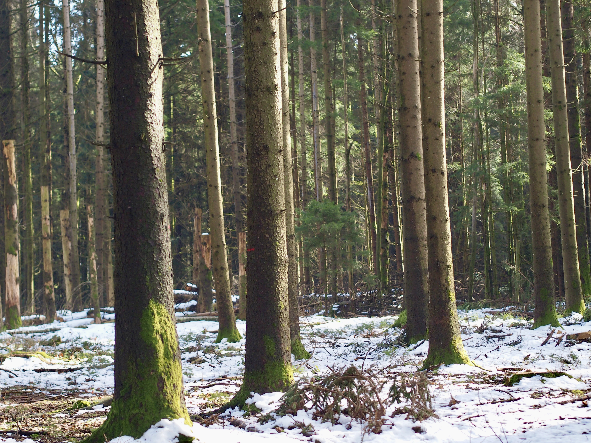

The forest is a magical place where the trees whisper ancient secrets and the ground is carpeted with moss. As I walked along the path, the sunlight filtered through the leaves, creating a dappled pattern on the forest floor.
I could hear the chirping of birds and the rustling of leaves as small animals scurried about. It was a peaceful and serene experience, one that made me feel connected to nature.
